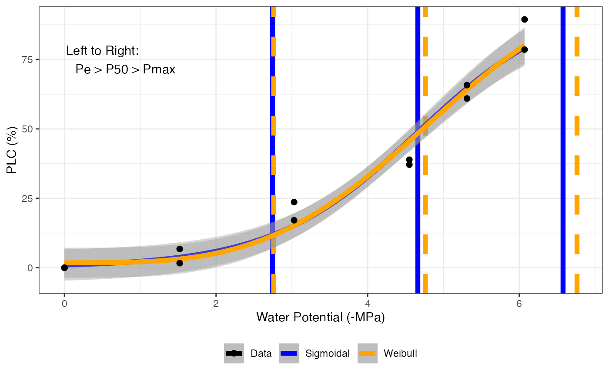

Fitting hydraulic vulnerability curves
fit_hydra_vuln_curve( data, varnames = list(psi = "psi", PLC = "PLC"), start_weibull = list(a = 2, b = 2), title = NULL )
| data | Dataframe |
|---|---|
| varnames | List of variable names. varnames = list(psi = "psi", PLC = "PLC") where psi is water potential in MPa, and PLC is percent loss conductivity. |
| start_weibull | starting values for the nls fitting routine for the Weibull curve |
| title | Title for the output graph |
fit_hydra_vuln_curve fits a sigmoidal function (Pammenter & Van der Willigen, 1998) linearized according to Ogle et al. (2009). Output is a list containing the sigmoidal model in element 1 and Weibull model in element 4, the fit parameters with 95 element 2, and hydraulic parameters in element 3 (including P25, P50, P88, P95, S50, Pe, Pmax, DSI). Px (25 to 95): water potential at which x conductivity is lost. S50: slope at 50 entry point. Pmax: hydraulic failure threshold. DSI: drought stress interval. Element 5 is a graph showing the fit, P50, Pe, and Pmax.
Ogle K, Barber JJ, Willson C, Thompson B. 2009. Hierarchical statistical modeling of xylem vulnerability to cavitation. New Phytologist 182:541-554
Pammenter NW, Van der Willigen CV. 1998. A mathematical and statistical analysis of the curves illustrating vulnerability of xylem to cavitation. Tree Physiology 18:589-593
# \donttest{ # Read in data data <- read.csv(system.file("extdata", "hydraulic_vulnerability.csv", package = "photosynthesis" )) # Fit hydraulic vulnerability curve fit <- fit_hydra_vuln_curve(data[data$Tree == 4 & data$Plot == "Control", ], varnames = list( psi = "P", PLC = "PLC" ), title = "Control 4" ) # Return Sigmoidal model summary summary(fit[[1]])#> #> Call: #> lm(formula = H_log ~ psi, data = data[data$H_log < Inf, ]) #> #> Residuals: #> 38 39 40 41 42 #> -0.01214 0.01361 -0.09323 0.20473 -0.11296 #> #> Coefficients: #> Estimate Std. Error t value Pr(>|t|) #> (Intercept) 4.88183 0.17588 27.76 0.000103 *** #> psi -1.09305 0.03988 -27.41 0.000107 *** #> --- #> Signif. codes: 0 ‘***’ 0.001 ‘**’ 0.01 ‘*’ 0.05 ‘.’ 0.1 ‘ ’ 1 #> #> Residual standard error: 0.1457 on 3 degrees of freedom #> Multiple R-squared: 0.996, Adjusted R-squared: 0.9947 #> F-statistic: 751.1 on 1 and 3 DF, p-value: 0.0001066 #>#> #> Formula: K.Kmax ~ exp(-((psi/a)^b)) #> #> Parameters: #> Estimate Std. Error t value Pr(>|t|) #> a 4.99160 0.06222 80.22 1.45e-07 *** #> b 3.22807 0.22158 14.57 0.000129 *** #> --- #> Signif. codes: 0 ‘***’ 0.001 ‘**’ 0.01 ‘*’ 0.05 ‘.’ 0.1 ‘ ’ 1 #> #> Residual standard error: 0.02427 on 4 degrees of freedom #> #> Number of iterations to convergence: 8 #> Achieved convergence tolerance: 1.49e-08 #># Return model parameters with 95\% confidence intervals fit[[2]]#> Value Parameter Curve #> b...1 4.466238 b Sigmoidal #> a...2 -1.093052 a Sigmoidal #> b...3 3.228068 b Weibull #> a...4 4.991601 a Weibull# Return hydraulic parameters fit[[3]]#> P25 P50 P88 P95 S50 Pe Pmax DSI #> 1 3.461151 4.466238 6.289053 7.160017 27.32629 2.636498 6.295978 3.659480 #> 2 3.393285 4.455847 6.300135 7.012168 25.10775 2.464430 6.447264 3.982834 #> Curve #> 1 Sigmoidal #> 2 Weibull# Return graph fit[[5]]# Fit many curves fits <- fit_many( data = data, varnames = list( psi = "P", PLC = "PLC" ), group = "Tree", funct = fit_hydra_vuln_curve )#> | | | 0% | |============== | 20% | |============================ | 40% | |========================================== | 60% | |======================================================== | 80% | |======================================================================| 100%# To select individuals from the many fits # Return model summary summary(fits[[1]][[1]]) # Returns model summary#> #> Call: #> lm(formula = H_log ~ psi, data = data[data$H_log < Inf, ]) #> #> Residuals: #> Min 1Q Median 3Q Max #> -0.6650 -0.4293 0.0984 0.3096 0.8015 #> #> Coefficients: #> Estimate Std. Error t value Pr(>|t|) #> (Intercept) 4.8662 0.4452 10.93 4.35e-06 *** #> psi -1.0439 0.1010 -10.34 6.61e-06 *** #> --- #> Signif. codes: 0 ‘***’ 0.001 ‘**’ 0.01 ‘*’ 0.05 ‘.’ 0.1 ‘ ’ 1 #> #> Residual standard error: 0.5216 on 8 degrees of freedom #> Multiple R-squared: 0.9304, Adjusted R-squared: 0.9217 #> F-statistic: 106.9 on 1 and 8 DF, p-value: 6.607e-06 #># Return sigmoidal model output fits[[1]][[2]]#> Value Parameter Curve #> b...1 4.661514 b Sigmoidal #> a...2 -1.043902 a Sigmoidal #> b...3 3.433237 b Weibull #> a...4 5.297359 a Weibull# Return hydraulic parameters fits[[1]][[3]]#> P25 P50 P88 P95 S50 Pe Pmax DSI #> 1 3.609104 4.661514 6.570151 7.482123 26.09754 2.745624 6.577403 3.831778 #> 2 3.685164 4.760983 6.593668 7.292066 24.99209 2.760350 6.761615 4.001265 #> Curve #> 1 Sigmoidal #> 2 Weibull# Return graph fits[[1]][[5]]# Compile parameter outputs pars <- compile_data( data = fits, output_type = "dataframe", list_element = 3 ) # Compile graphs graphs <- compile_data( data = fits, output_type = "list", list_element = 5 ) # }